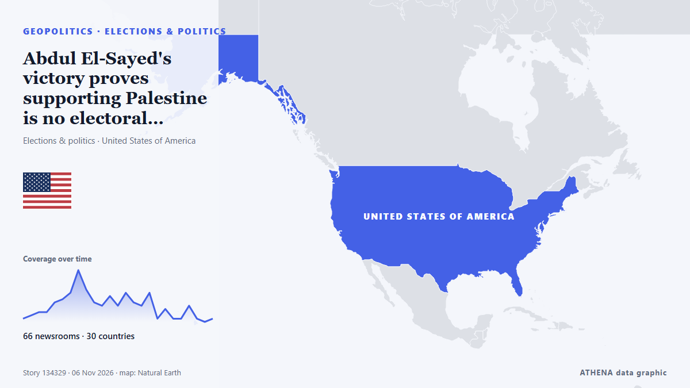

Abdul El-Sayed's victory proves supporting Palestine is no electoral liability

With New Hampshire and Georgia staying in Democratic hands, Republicans now look to Michigan for a pickup, where Democrat Abdul El-Sayed is competing with Republican Mike Rogers. من France 24 English
نشرته بشكل مستقل 66 مصدرًا في 30 دولة منذ 3 نوفمبر، وأول من نشره Rolling Stone؛ والتغطية تتراجع. يقدّر ATHENA الخطر بأنه متزايد (4.0/10)، ويعود ذلك أساسًا إلى خطورة الضرر الموصوف ونطاقه الجغرافي والقطاعي. الثقة 89٪ (مرتفعة)، وعدد المصادر المستقلة المؤكِّدة: 66، بمتوسط موثوقية للمصادر يبلغ 74٪. وسائل الإعلام حسب البلد: الولايات المتحدة (13), فرنسا (7), سنغافورة (2). التغطية: من 3 نوفمبر إلى 4 نوفمبر، 22 ساعة.
لماذا يهم: قد تغيّر التطورات الأمنية والدبلوماسية التحالفات والتجارة والأسواق إلى ما هو أبعد بكثير من الدول المعنية مباشرة.
ما الذي تغيّر: 15 تقارير جديدة من 13 غرف أخبار خلال 24 ساعة حتى 6 نوفمبر.
العنوان الأول: Midterms: Abdul El-Sayed, Mike Rogers face off for Michigan Senate seat
تُعرض العناوين بالإنجليزية كما نُشرت.
نظرة سريعة
اختير وقُيِّم وكُتب وفق منهجية ATHENA المنشورة. لا يتدخل أي محرر في الأحداث بعينها. كيف يُنتَج ›
| 03 Nov 18:30 UTC | 1 |
|---|---|
| 03 Nov 21:30 UTC | 2 |
| 04 Nov 00:30 UTC | 3 |
| 04 Nov 03:30 UTC | 3 |
| 04 Nov 06:30 UTC | 6 |
| 04 Nov 09:30 UTC | 7 |
| 04 Nov 12:30 UTC | 9 |
| 04 Nov 15:30 UTC | 16 |
| 04 Nov 18:30 UTC | 10 |
| 04 Nov 21:30 UTC | 6 |
| 05 Nov 00:30 UTC | 5 |
| 05 Nov 03:30 UTC | 8 |
| 05 Nov 06:30 UTC | 5 |
| 05 Nov 09:30 UTC | 9 |
| 05 Nov 12:30 UTC | 6 |
| 05 Nov 15:30 UTC | 5 |
| 05 Nov 18:30 UTC | 9 |
| 05 Nov 21:30 UTC | 1 |
| 06 Nov 00:30 UTC | 4 |
| 06 Nov 03:30 UTC | 1 |
| 06 Nov 06:30 UTC | 1 |
| 06 Nov 09:30 UTC | 5 |
| 06 Nov 12:30 UTC | 1 |
| 06 Nov 15:30 UTC | 0 |
| 06 Nov 18:30 UTC | 1 |
لماذا هذه الأرقام
الأهمية
الخطر
الثقة
التغطية — من نشر الخبر ومتى
العنوان كما نُشر · يفتح الأصل- Rolling Stone · الولايات المتحدةCan Dems Actually Win the Senate? Here’s a State-by-State Guide
- The Hill · الولايات المتحدةSullivan campaign, NRSC form 'recount fund' for Alaska Senate race
- The Straits Times · سنغافورةUS midterms: Alaska Republican Dan Sullivan accuses Democrats of planting ‘decoy’ Daniel J. Sullivan
- The Daily Star — page reader · بنغلاديشAlaskan in tight Senate race accuses Dems of 'election cheating'
- France 24 English · فرنساMidterms: Abdul El-Sayed, Mike Rogers face off for Michigan Senate seat
- PBS NewsHour · الولايات المتحدةMaryland voters pass Democratic-backed redistricting amendment
- The Independent · المملكة المتحدةCNN nails election night with gas prices highlighted on ‘magic wall’ during midterms returns
- Gothamist (New York City) · الولايات المتحدةRepublican Jeff Van Drew concedes NJ congressional seat in surprise victory for Democrats
- NPR · الولايات المتحدةOn a historic night for democratic socialists, Mamdani says midterms show power of working-class voters
- The Hill · الولايات المتحدةForstag flips Montana House seat, beating Trump-backed opponent
- NPR · الولايات المتحدةRepublicans tried to gerrymander their way out of big congressional losses. It didn't work
- France 24 English · فرنساMidterms: What impact did redistricting in California and Texas have?
- Khaama Press · أفغانستانAbdul El-Sayed Wins Michigan Senate Race, Becomes First Muslim US Senator
- France 24 English · فرنسا'The mood got better and better as the night went on': Dems celebrate midterms victory
- The Canadian Press (via CityNews) · كنداDemocrats deliver a stunning rout in Texas to retake power for the first time in decades
- France 24 English · فرنساAbdul El-Sayed set to become first Muslim senator after win in Michigan
- France 24 English · فرنسا'A generational win' for Dems as blue wave sweeps midterms
- Ship.Energy · INTClimate NGOs hope Democrats’ US midterm victory could spark breakthrough on IMO’s NZF
- The New Arab · INTPalestinian-American Rashida Tlaib wins re-election in Michigan
- Premium Times · نيجيرياHistory in US as Americans elect first Muslim, native American senators, other firsts too
- The Straits Times · سنغافورة'A mandate for change': Democrats remake Texas politics in election rout
- Egyptian Streets · مصرEgyptian-American Abdul El-Sayed Wins Michigan Senate Seat, Becoming First Muslim Senator
- Montana Free Press · الولايات المتحدةAP calls it: Democrat Sam Forstag defeats Flint in Western House flip
- CommonDreams · الولايات المتحدةYouth Vote Delivers Historic Victories in Michigan and Nationwide
- Euronews English · فرنسا'A feeling of redemption': Young voters in Maine hail Democratic victory
- TASS (English) · روسياDemocratic win and Trump’s reaction to outcome of midterm Congressional election
- Aravot (English) · أرمينياAbdul El-Sayed Wins Michigan Senate Race
- Türkiye Today · تركياUS midterms redraw the map of power in Washington
- Indian Express · الهندFrom El-Sayed to ‘mini Mamdanis’: US midterm 2026 wins deepen Netanyahu’s political troubles
- Times of India · الهندTrump loses war at home: Democrats storm red bastions, seize both House and Senate
- The Independent · المملكة المتحدةSky News reporter responds after heated El-Sayed confrontation: ‘Disappointing’
- Mehr News (English) · إيرانTrump’s economic plan against Iran backfired: Hemmati
- Rolling Stone · الولايات المتحدةFrom ‘Talafreako’ Tees to Anti-Trump Towels, Etsy Sellers Celebrate Democrats’ Midterm Win With New Merch
- Al Jazeera English · قطرDemocratic voters celebrate El-Sayed’s Michigan win in election ‘blue wave’
- The Hollywood Reporter · الولايات المتحدةWhat Abdul El-Sayed’s Wild, Historic Ride to the Senate Means to One Michigander
- Billboard · الولايات المتحدةThe Chicks Celebrate Democrats’ Historic ‘Blunami’ Midterm Election Victory With Two-Word Message to President: ‘F–k Trump’
- France 24 English · فرنساTale of 2 midterms: Republican redistricting 'backfired' while Democrats 'exceeded all expectations'
- TRT World · تركياSouth Africa leader sees 'new era' in US ties after Democrat victory
- CNBC World · الولايات المتحدةWhat Republicans' huge loss means for Trump